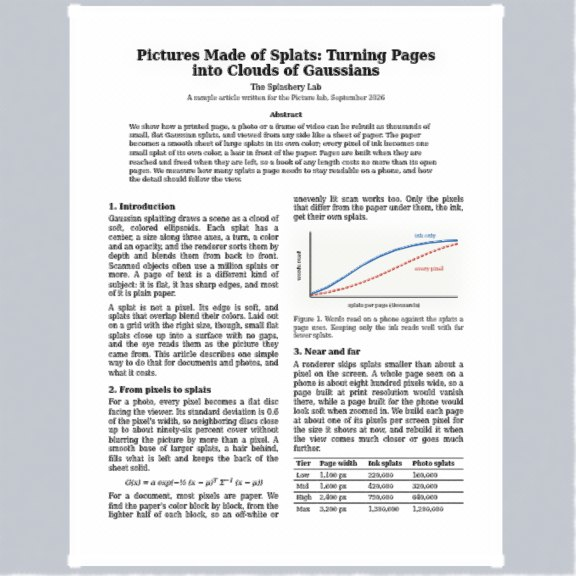
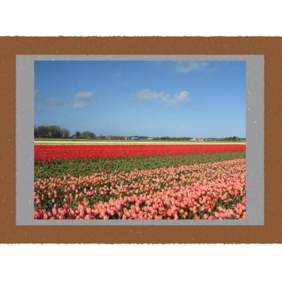
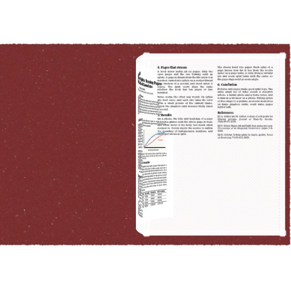
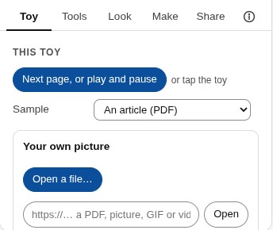
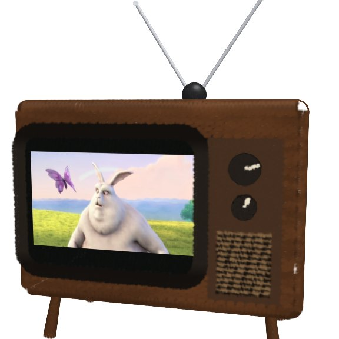
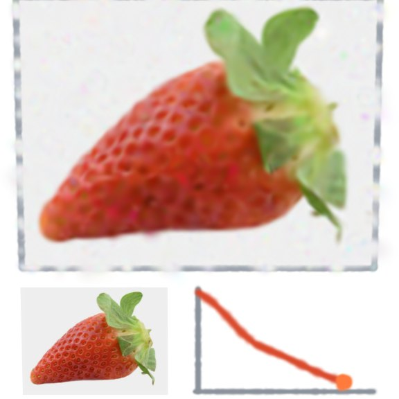
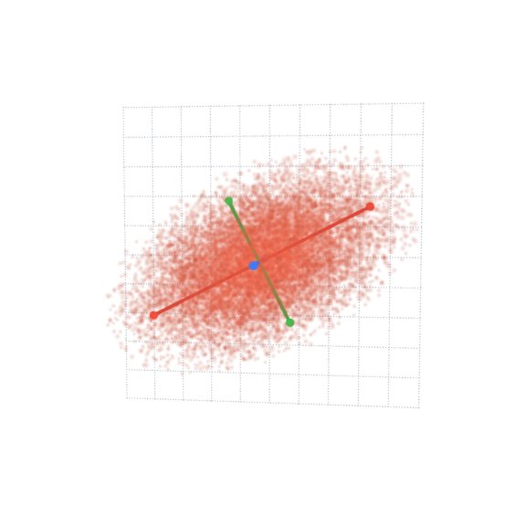
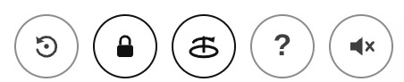

Chapter 5Pictures, screens, and your own input
The toys in Level 2 are built from shapes. Some toys show something that is not a shape: a
page of a PDF, a photo, a GIF, a video, or something you type or draw. Three additions to a
recipe make them: picture sheets, an input panel, and a few
view settings. They are still Gaussian splats, all the way down. The toys on the
Pictures and pages shelf are being tried out, so they are on the shelf only when Splashery
is opened with ?labs=1.
Picture sheets: a page, a photo, a GIF, a video
A sheet is a flat place in a toy where a picture shows:
k.sheet({ id, center, width, height }). The kit draws nothing there. The site
opens the picture before the build, then turns it into splats on the sheet after the build,
in a background worker so the page stays smooth. A PDF page becomes a smooth sheet of large
soft splats in the paper's color, with a small splat of its own color wherever the page
differs from the paper, which is the ink (method: "ink"); in a photo, each
sampled pixel becomes a flat splat ("pixels"); a GIF or a video becomes a
screen that is redrawn on every frame ("screen"). The site picks the method
from the kind of file. It rebuilds a sheet finer as you zoom in, and frees the pages you
have left, so a book of 200 pages does not need 200 pages of splats.

A PDF page (the Picture lab)

The recipe below: a photo in a frame
Three parts of a recipe work together:
-
pictures: { sample, accept }names what shows until you open your own (the sample's address) and which kinds a visitor may open:"pdf","image","gif","video". -
drivemay choose the page of each sheet without.sheets[id] = { page, visible }. Pages count from 0, and a page that does not exist shows nothing. A sheet that is not visible is not built unless it requestsahead: 1. Without it, every sheet shows the current page. -
info.data.picturesis the toy's view of the media:page,count,kind,name,playing, and the functionsnext(),prev(),go(n), andtogglePlay().
A whole picture toy, in a few lines. Its input gives the Toy tab a button that
opens a photo, a GIF, or a video; the rest of the toy is a card and four wooden bars:
import { smoothstep } from "../src/kit.js";
// Two small picture toys for Level 5 of the Tinkerer's Manual: a framed photo
// that opens your own picture, and a little book whose page turns like paper.
export const RECIPES = {
"little-frame": {
turntable: false,
tiltLock: true, // a drag only spins it left and right
pictures: {
sample: () => "assets/toys/picture-lab/photo.jpg", // shown until you open your own
accept: ["image", "gif", "video"],
},
input: {
title: "Your own picture",
media: { accept: ["image", "gif", "video"] },
note: "Open a photo, a GIF or a video. Files stay on this device.",
},
build(k) {
// The picture: a sheet, filled with splats after the build.
k.sheet({ id: "photo", center: [0, 0, 0.03], width: 1.5, height: 1 });
// A gray card behind it, and four wooden bars around it.
k.add(k.box(1.6, 1.1, 0.02), { pos: [0, 0, -0.02], color: "#9a9a9a" });
for (const [w, h, x, y] of [
[1.8, 0.1, 0, 0.6],
[1.8, 0.1, 0, -0.6],
[0.1, 1.1, -0.85, 0],
[0.1, 1.1, 0.85, 0],
])
k.add(k.box(w, h, 0.1), { pos: [x, y, 0], color: "#8a5a34" });
},
},Turning a page
A page that turns like paper is a sheet with leaf: slot (a slot from 0 to 9)
and a spine to turn about: k.spine({ at, axis, dir }) gives the spine's place,
its direction, and the direction from it along the pages when they lie flat. Each frame,
drive sets out.leaves[slot] = { angle, curl }: the
angle in radians (0 lying flat, π turned all the way over) and the
curl, how much the page bends along a circular arc (a negative number lets the
free edge lag behind, like paper in air). Every splat of the page turns with the curve at
its place, so it stays a solid sheet at every angle, which a page bent with soft regions
would not.

The little book below uses a pulse control for the turn, the way Level 2's gust does. The
page under the turning one is built ahead of time (a sheet is normally built only while it
is visible, unless it requests ahead: 1, so a page that shows up halfway could
make the turn wait), and the page number moves on when the turn ends. Keep a turning sheet
on the body (part 0), because a part's own turn would replace the leaf's. The far side of
the turning page shows the page in mirror image, like tracing paper, until it lands.
"little-book": {
turntable: false,
tiltLock: true,
pictures: { sample: () => "assets/toys/picture-lab/article.pdf", accept: ["pdf"] },
input: { title: "Your own book", media: { accept: ["pdf"] }, note: "Open a PDF." },
controls: [{ key: "turn", label: "Turn the page", type: "pulse", ease: 1.2 }],
action: { key: "turn", label: "Turn the page" },
drive(t, c, out, info) {
const pics = info.data?.pictures; // { page, count, go(n), next(), prev(), ... }
// The page changes when the turn ends, and the turning page lands on the left.
const turning = c.turn > 0;
if (BOOK.turning && !turning && pics) pics.go(pics.page + 1);
BOOK.turning = turning;
const page = pics?.page ?? 0;
// The pulse falls from 1 to 0: the page swings from 0 to a half turn (pi)
// about the spine, and its free edge lags behind, like paper.
const s = turning ? smoothstep(0, 1, 1 - c.turn) : 0;
out.leaves = [{ angle: Math.PI * s, curl: -1.2 * Math.sin(Math.PI * s) }];
out.sheets = {
// Once the turn starts, the left page is the one that is about to land on it.
left: { page: turning ? page : page - 1 }, // a page out of range shows nothing
under: { page: page + 1 }, // built ahead, and uncovered as the page lifts
front: { page }, // the turning page (its far side shows in mirror image)
};
// It is built, but hidden, until the turning page lands on it.
out.parts.leftPage = { visible: turning ? 0 : 1 };
},
build(k) {
BOOK.turning = false;
k.spine({ at: [0, 0, 0], axis: [0, 1, 0], dir: [1, 0, 0] });
const W = 1.4;
const H = 1.9;
const leftPage = k.part("leftPage");
const page = { width: W, height: H };
k.sheet({ id: "left", ...page, part: leftPage, center: [-W / 2, 0, 0], align: [1, 0] });
k.sheet({ id: "under", ...page, center: [W / 2, 0, 0], align: [-1, 0] });
// The turning page: a sheet on leaf slot 0, a hair in front of the others.
k.sheet({ id: "front", ...page, center: [W / 2, 0, 0.008], align: [-1, 0], leaf: 0 });
// The cover, behind the pages.
k.add(k.box(2 * W + 0.1, H + 0.1, 0.03), { pos: [0, 0, -0.03], color: "#7a2f2f" });
},
},
};
// Whether the page was turning in the last frame.
const BOOK = { turning: false };Your own input: typing, drawing, opening a file
A recipe can ask for something from the visitor. Its input adds a panel to the
Toy tab, in one of three forms:
-
Typing: a text box and a button, and maybe a button that opens a text file
(
fileButton,accept). The Splat equation toy of Level 3 is one; so is the Word vectors toy, where you type king − man + woman. -
Drawing:
pad: { cols, rows, max, button }adds a small grid you paint with a soft brush, and a button that hands the drawing toreadas the text"pad:…"(one number for each cell, row by row). The CNN toy's "3D, draw a digit" view reads the digit you draw. -
Opening a picture:
media: { accept }adds an Open a file… button, a field for a web address, the page buttons (or play and pause for a video) and a way back to the sample. Level 5's picture toys use it.

For typing and drawing, read(text, fileName) turns what came in into option
values, or throws an Error whose message the panel shows in place; and
shown() says what is showing now. Keep what goes into options small: options
are saved in the toy's link. Here is a whole toy with a typed input, a row of bars for the
numbers you give it:
// A small toy with its own typed input, for Level 5 of the Tinkerer's Manual:
// type some numbers and the toy stands them up as bars.
const LIMIT = 12;
const COLORS = ["#e8384f", "#ffc233", "#1fb59a", "#4dabf7"];
export const RECIPES = {
"little-bars": {
options: [
{
key: "numbers",
label: "Your numbers",
type: "text",
default: "3 1 4 1 5 9 2 6",
hidden: true,
},
],
input: {
title: "Your own numbers",
placeholder: "3 1 4 1 5 9 2 6",
button: "Show them",
fileButton: "Open a text file…",
accept: ".txt,.csv",
note: `Type up to ${LIMIT} numbers from 0 to 20, separated by spaces or commas, or open a text file with them.`,
// Turns the typed text into option values, or throws a message that the panel shows.
async read(text) {
const list = String(text).match(/-?\d+(\.\d+)?/g) || [];
if (list.length === 0) throw new Error("Type some numbers, like 3 1 4 1 5.");
if (list.length > LIMIT) throw new Error(`That is more than ${LIMIT} numbers.`);
if (list.some((n) => n < 0 || n > 20)) throw new Error("Use numbers from 0 to 20.");
return { numbers: list.join(" ") };
},
shown: () => "Your numbers",
},
build(k, o) {
const values = String(o.numbers).split(" ").map(Number);
values.forEach((v, i) => {
const h = 0.05 + v / 10;
k.add(k.box(0.14, h, 0.14), {
pos: [(i - (values.length - 1) / 2) * 0.2, h / 2, 0],
color: COLORS[i % COLORS.length],
});
});
},
},
};The Screen and the Gaussian splatting toy
Two more toys put these to work: the Screen on the Pictures and pages shelf, and Gaussian splatting on the AI and computing shelf.
The Screen shows a video or a GIF on a screen in one of four styles: an old TV, a
flat TV, a cinema with curtains, and a hologram. Its picture is one sheet with
method: "screen"; the knobs, the curtains, and the glass are ordinary kit
parts. A tap switches it on, and then plays and pauses; the speaker button in the top bar
turns the sound on. You can open your own video or GIF.
The Gaussian splatting toy lets you watch how a photo becomes splats. Its Training view fits 2,400 flat (two-dimensional) Gaussians to a photo (a strawberry, or your own), by gradient descent in a background worker: the splats start as random specks and, step by step, they slide, stretch, and change color until together they are the picture. The fit uses front-to-back blending, equivalent to the renderer's back-to-front blending, with the renderer's finite bell, so what you see is the real fit. One splat lets you set the sizes, the opacity, and the color of a Gaussian illustrated by a cloud of small splats and turn it (Level 1's numbers); Many splats builds a small rubber duck from kit shapes and then shrinks every splat to a dot, so you see the splats that make it; and Sorting shows the splats of a ball appearing one by one, in the back-to-front order a camera draws them.

The Screen (old TV)

Gaussian splatting, training

Steering the view: the top bar and the tilt lock
Three round buttons sit in the top bar, beside the sound and help buttons. They control how you look at the toy on show, and none of them changes the toy.

- Reset view (the circular arrow) puts the camera back where the toy starts. The R key does the same, and so does the button in the Tools tab. A double tap resets the view unless the toy uses it to focus on a page.
-
Tilt lock (the padlock) makes a drag turn a toy only left and right, so a flat toy
such as a page, a photo, or a screen stays facing you. Zooming, panning, and pinching
still work. Your choice is remembered for that toy for the rest of your visit. In a
recipe, it is the flag
tiltLock: true, and every toy on the Pictures and pages shelf sets it. A link keeps the camera it was saved with, and the lock then holds that tilt. -
Turntable (the record player) switches the slow turn that a toy does when nobody is
touching it. It is the same setting as Turntable when idle in the Toy tab, and this
device remembers it. A recipe can opt out with
turntable: false, as a page does. If your device asks for less motion, the turn stays off and the button is disabled.
Two fingers on a touch screen zoom. They roll the toy only after a clear twist (about 17 degrees) and turn it only when they move together, so a normal pinch never spins what you are looking at. A two-finger drag moves the toy across the screen instead of turning it, as do Shift or Option/Alt and a drag on a computer; ↺ or R puts it back in the middle. A double-tap does too unless the toy uses it for page focus.